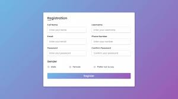
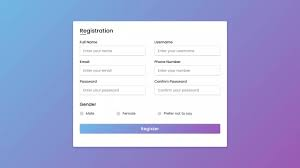
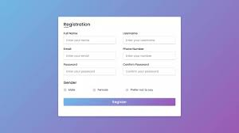

My Projects

 

I'm Phatangare Pallavi, and I'm currently in my second year of pursuing a Bachelor of Science in Computer Science. It's a pleasure to have the opportunity to introduce myself to all of you. I have always been fascinated by the world of technology and the limitless possibilities it offers. My journey into computer science began with a simple curiosity about how things work, which gradually evolved into a deep passion for coding and problem-solving. Over the past few years, I've had the privilege of delving into a variety of programming languages, algorithms, and software development projects, honing my skills and gaining practical experience. As a SYBCS student, I have been fortunate to explore various aspects of computer science, including databases, networking, artificial intelligence, and web development. This academic journey has not only equipped me with technical knowledge but has also instilled a strong analytical mindset and the ability to tackle complex problems systematically. Beyond academics, I'm an avid believer in the importance of teamwork and collaboration. I've had the pleasure of participating in group projects, hackathons, and coding competitions, which have taught me the value of effective communication, adaptability, and creativity in the field of computer science. I'm also passionate about staying updated with the latest trends in technology, as it's a dynamic field that constantly evolves. In my free time, I love to explore new programming languages, contribute to open-source projects, and follow tech blogs and forums to keep my knowledge up-to-date. In addition to my technical interests, I'm a firm believer in maintaining a healthy work-life balance. I enjoy outdoor activities, reading, and spending time with friends and family. I'm excited to be part of this academic community, and I'm looking forward to collaborating, sharing ideas, and learning from each of you. If you have any questions, need assistance with projects, or simply want to discuss anything related to computer science or technology, feel free to reach out. Let's make the most of our time here at SYBCS and work together to achieve our goals.
I'm Phatangare Pallavi, and I'm currently in my second year of pursuing a Bachelor of Science in Computer Science. It's a pleasure to have the opportunity to introduce myself to all of you. I have always been fascinated by the world of technology and the limitless possibilities it offers. My journey into computer science began with a simple curiosity about how things work, which gradually evolved into a deep passion for coding and problem-solving. Over the past few years, I've had the privilege of delving into a variety of programming languages, algorithms, and software development projects, honing my skills and gaining practical experience. As a SYBCS student, I have been fortunate to explore various aspects of computer science, including databases, networking, artificial intelligence, and web development.
